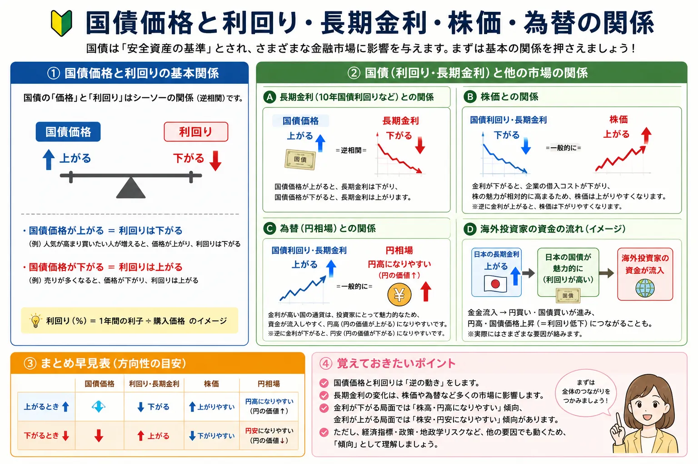

話題・トレンド
国債とは？国債が売られるとなぜ金利が上がるの？初心者向けに解説
金融ニュースでは「国債が売られて長期金利が上昇」「米10年債利回りが上昇」といった表現が頻繁に登場します。 初めて聞くと「国債が売られたのに、なぜ金利は上がるの？」と疑問に感じやすいポイントです。 この記事では、国債の基本から、国債価格と利回りが逆方向へ動く仕組み、政策金利と長期金利の違い、株価・為替との関係まで順番に整理します。
Overview
国債価格と利回り・長期金利の関係を最初に整理

- 国債は、国が資金調達のために発行する債券です。
- 発行後の国債は市場で売買され、市場価格が変化します。
- 国債価格と利回りは、基本的に逆方向へ動きます。
- 国債が売られて価格が下がると、その国債の利回りは上昇します。
- 10年国債利回りは、長期金利を表す代表的な指標としてニュースで使われます。
- 長期金利の変化は株式、住宅ローン、企業金融、為替など幅広い市場へ影響する場合があります。
Definition
国債とは？
国債は、国が必要な資金を調達するために発行する債券です。 初心者の場合は「国債を購入する＝国へお金を貸す」と考えるとイメージしやすくなります。
国債
国へお金を貸すイメージ
投資家が国債を購入すると、発行した国はその資金を利用します。国債の条件に応じて投資家は利子を受け取り、満期になると原則として決められた額面金額が償還されます。
満期
お金が返される期限
国債には2年、5年、10年、20年、30年などさまざまな期間があります。債券で資金を借りている期間が終了する日を満期といいます。
利子
資金を貸した対価
利付国債では、あらかじめ定められた条件に従って利子が支払われます。利払いの条件は国債の種類によって異なります。
償還
満期に額面金額が返される
国債が満期を迎え、発行条件に基づいて元本が返されることを償還といいます。ただし、途中で市場売却する場合には市場価格によって損益が発生することがあります。
日本国債や米国債などがある
日本政府が発行するものは日本国債（JGB）、米国政府が発行するものは米国債（U.S. Treasury）と呼ばれます。 各国がそれぞれ自国の財政や資金調達のために国債を発行しており、信用力、金利、通貨などの条件は国ごとに異なります。
| 比較項目 | 国債 | 株式 |
|---|---|---|
| 発行する主体 | 国 | 企業 |
| 基本的な意味 | 国へ資金を貸す | 企業へ出資する |
| 満期 | 原則としてある | 通常はない |
| 主な収益 | 利子・売買損益など | 配当・売買損益など |
| 価格変動 | 金利・信用力・需給などで変動 | 業績・需給・景気などで変動 |
※ スマートフォンでは横にスクロールできます。
Government Finance
国はなぜ国債を発行するの？
国には税金などによる収入がありますが、すべての支出をその年の税収だけで賄うとは限りません。 必要な資金を調達する方法の一つとして国債が発行されます。
税収だけでは賄えない支出
政府の支出が税収などの収入を上回る場合、その資金を調達する手段の一つとして国債が利用されます。
政策や公共サービス
社会保障、公共事業、防災、教育など、国が行うさまざまな政策や公共サービスには資金が必要です。
市場から資金を調達
国は国債を発行し、金融機関や機関投資家、個人投資家などから資金を調達します。
国債発行や財政政策については政治的・経済的にさまざまな議論がありますが、本記事ではその是非ではなく、金融市場で国債と金利がどのようにつながっているのかを理解することを目的としています。
Price & Yield
国債の「価格」と「利回り」とは？
国債ニュースを理解するときに最も重要なのが、国債価格・表面利率・利回りは別のものという点です。
国債価格
市場で売買される価格
すでに発行された国債は債券市場で売買されます。株式と同じように需要と供給などによって市場価格が変化します。
表面利率
額面に対する利子の割合
国債が発行される際に設定される利率です。固定利付国債では、発行後に市場価格が変動しても、この表面利率そのものが市場価格に合わせて動くわけではありません。
利回り
購入価格に対する収益性
利回りは、購入価格、受け取る利子、満期までの期間、償還価格などを考慮した収益性を示します。そのため市場価格が変われば利回りも変化します。
初心者が最初に覚えたいポイント：
「表面利率が上がったから国債価格が下がる」と単純に覚えるのではなく、まず発行済み国債の市場価格が動くことで、その国債を今の価格で買った場合の利回りが変わると理解すると整理しやすくなります。
Core Mechanism
なぜ国債が売られると金利が上がるの？
ここがこの記事で最も重要なポイントです。 金融ニュースでいう「国債が売られて金利が上がった」は、主に国債価格が下落し、その国債の市場利回りが上昇したという意味です。
100万円の国債を例に考えてみる
仕組みを理解するため、単純化して「100万円で購入すると年間2万円の利子を受け取れる国債」があるとします。 100万円で購入した場合、利子だけを単純に見れば、購入金額に対する割合は2％です。
その後、この国債が市場で売られて価格が90万円まで下がったとします。 すでに発行された同じ国債なので、受け取る利払いが年間2万円のままだと仮定すると、90万円で購入した人にとっては、同じ2万円をより少ない購入金額で受け取れることになります。
利子だけを単純に購入価格で割ると、2万円 ÷ 90万円 ≒ 2.22％です。 つまり、国債価格が100万円から90万円へ下がると、購入価格に対する利回りは高くなります。
重要： 上の2％・2.22％という数字は、国債価格と利回りが逆に動く仕組みを理解するために大幅に単純化した例です。 実際の債券利回りは、表面利率だけでなく、購入価格、残存期間、償還価格、利払い時期などを含めて計算されます。 この例を実際の債券利回り計算そのものとして扱わないよう注意してください。
Opposite Direction
国債が買われるとどうなる？
国債が売られた場合の反対を考えると、価格と利回りの関係はさらに分かりやすくなります。
国債価格 ↑ ＝ 利回り ↓
国債価格 ↓ ＝ 利回り ↑
債券ニュースでは、まず「国債価格と利回りは基本的に逆方向」と覚えておくと理解しやすくなります。
Market Factors
なぜ国債は売られたり買われたりするの？
国債価格は一つの材料だけで決まりません。将来の金利や物価、景気、財政、市場の需給など、さまざまな要因を投資家が考えながら売買します。
インフレ
物価上昇への警戒
インフレが強まると、将来の金融引き締めや金利上昇が意識され、既存の低い利率の国債が相対的に魅力を失う場合があります。
金融政策
中央銀行の方針
日銀やFRBなど中央銀行の利上げ・利下げ方針は、将来の金利水準に対する市場予想を変化させ、債券市場にも影響します。
政策金利の見通し
現在より「これから」が重要
債券市場は現在の政策金利だけでなく、半年後・数年後に金融政策がどう変わるかという市場参加者の予想も織り込みます。
景気
景気の強さ・弱さ
景気が強くインフレ圧力が高まりそうな場合と、景気後退が警戒される場合では、将来の政策金利予想や国債需要が変化します。
財政
国の債務や国債発行への見方
財政赤字や将来の国債発行増加への懸念が強まると、国債の需給や信用に対する見方が変化し、長期金利が動く場合があります。
国債の需給
発行量と買い手のバランス
国債の供給量が増える一方で買い手が少なければ、価格低下・利回り上昇につながる場合があります。逆に強い需要があれば価格を支える要因になります。
リスク回避
安全性を求める資金移動
景気不安や金融市場の混乱時には、信用力が高いと評価される国の国債へ資金が移動する場合があります。国債が買われれば価格上昇・利回り低下につながります。
市場予想
将来の金利を先回りする
投資家は経済指標や中央銀行の発言などから将来の金利を予想します。そのため政策変更が実際に行われる前から国債価格や利回りが動くことがあります。
「インフレだから国債安」「景気悪化だから国債高」と一つの材料だけで決めつけるのは注意が必要です。 インフレ、金融政策、財政、地政学リスク、国債発行量、投資家のポジションなど複数の要因が同時に影響します。
Policy Rate vs Long-term Rate
政策金利と長期金利は何が違う？
金利ニュースを理解するうえで重要なのが、政策金利と長期金利は同じものではないという点です。
| 比較項目 | 政策金利 | 長期金利 |
|---|---|---|
| 主な意味 | 中央銀行が金融政策として設定・誘導する短期金利 | 長期間の資金を貸し借りするときの金利 |
| 代表例 | 日銀の政策金利、米国のFF金利誘導目標など | 10年国債利回りなど |
| 誰が決める？ | 中央銀行が金融政策として決定・誘導 | 国債市場の売買を通じて形成される |
| 主な変動要因 | 物価・景気・雇用などを踏まえた中央銀行の判断 | 将来の政策金利、インフレ、景気、財政、国債需給など |
| ニュースの見方 | 利上げ・利下げ・据え置き | 国債売買による利回りの上昇・低下 |
※ スマートフォンでは横にスクロールできます。
中央銀行が政策金利を決めているからといって、すべての市場金利を直接決めているわけではありません。 長期金利は、将来の政策金利、インフレ予想、景気、財政、国債の需給などを市場参加者が織り込むことで変化します。
金融政策そのものについては FOMCとは？、 金利上昇が株式や生活へ与える影響については 金利上昇とは？ でも詳しく解説しています。
10-Year Yield
10年国債利回りがニュースになるのはなぜ？
日本10年国債や米国10年国債の利回りは、その国の長期金利を表す代表的な指標として金融市場で広く利用されています。
日本
日本10年国債利回り
日本の長期金利を確認するときに代表的な指標として使われます。日銀の金融政策、国内インフレ、国債需給、財政への見方などによって変化します。
米国
米国10年国債利回り
世界最大級の金融市場である米国の代表的な長期金利です。米国株だけでなく世界の株式、為替、債券市場から注目されています。
なぜ10年金利が幅広い市場へ影響するの？
住宅ローン
固定型住宅ローンなどの金利は長期市場金利の影響を受けるため、長期金利の上昇が家計の借入コストへ波及する場合があります。
企業の資金調達
社債や長期借入など企業の調達金利にも市場金利が関係します。金利上昇が長く続けば、設備投資や企業収益に影響する場合があります。
株式市場
投資家が株式の将来価値を計算するときにも金利は重要です。また、安全性が比較的高い国債で得られる利回りが上昇すると、株式との相対的な魅力の比較にも影響します。
Stocks
国債・長期金利と株価の関係
長期金利は株式市場でも重要な材料です。ただし、金利上昇＝必ず株安ではありません。
成長株・ハイテク株が金利を意識されやすい理由
成長株は、現在の利益よりも将来の大きな利益を期待して高く評価されている場合があります。 株式価値を考える際には将来得られる利益を現在価値へ割り引いて評価する考え方があり、割引に使われる金利が高くなるほど、遠い将来の利益の現在価値が低く計算されやすくなります。 そのため長期金利が急上昇すると、成長株やハイテク株の高い評価が見直される場合があります。
金利上昇が重しになりやすい例
成長期待の大きい企業
将来利益への期待が株価に大きく反映されている企業では、長期金利上昇によって株価評価が調整される場合があります。
影響が異なる例
銀行など金融業
金利上昇によって貸出金利や運用環境が改善するとの期待が高まる場合があり、他業種とは異なる株価反応をすることがあります。ただし金利上昇が銀行株に必ずプラスという意味ではありません。
「国債売り＝必ず株安」ではありません。 長期金利が上昇していても、景気拡大や企業業績への期待がそれ以上に強ければ株価が上昇することもあります。 株価が動く基本については 株価はなぜ上下するのか？ も参考になります。
Foreign Exchange
国債・金利と為替の関係
為替市場では、特に米国債利回りや日本国債利回りの変化が注目されます。理由の一つが、通貨間の金利差です。
例えば、米国の金利が日本より高く、その差がさらに拡大すると予想されれば、相対的に高い金利を得られるドルが選好される材料になる場合があります。 一方、日米金利差の縮小が意識されれば反対方向の材料になる場合があります。
ただし、「米国債利回り上昇＝必ず円安」ではありません。 為替は、日米の金融政策、景気、インフレ、貿易、地政学リスク、投資家のリスク回避姿勢など多くの要因で動きます。 円安の基本については 円安とは？ で整理しています。
Risk
国債は「安全資産」なの？
信用力が高いと評価される国が発行する国債は、株式などと比べて比較的安全性の高い資産として扱われることがあります。 しかし、国債なら絶対安全という意味ではありません。
金利変動リスク
市場金利が上がると価格が下がる場合がある
固定利率の国債を保有しているときに市場金利が上昇すると、既存国債の市場価格が下落することがあります。
価格変動
途中売却では元本割れもあり得る
市場で売買される国債を満期前に売却する場合、購入価格より市場価格が低ければ損失が発生することがあります。
インフレ
実質的な購買力が低下する可能性
固定された利子を受け取っていても、物価上昇率が高ければ、そのお金で買えるモノやサービスが減り、実質的な価値が低下する場合があります。
為替リスク
外国国債では通貨変動にも注意
日本円から米国債など外国国債へ投資する場合、債券価格だけでなく為替変動によって円換算の損益が変化します。
信用リスク
発行国ごとに信用力が異なる
国債だからすべて同じ安全性というわけではありません。発行国の財政や経済状況によって信用力は異なります。
期間リスク
一般に残存期間が長いほど金利変動の影響も大きい
長期債は将来の金利変化を長期間受けるため、短期債より価格変動が大きくなりやすい傾向があります。
投資商品の安全性を考えるときは「安全か危険か」の二択ではなく、 投資のリスクとリターンの関係 として整理すると理解しやすくなります。
News Checklist
初心者が国債ニュースを見るポイント
「国債が売られた」「長期金利上昇」「米10年債利回り上昇」というニュースを見たときは、次の順番で確認すると整理しやすくなります。
-
どこの国の国債か
日本国債なのか米国債なのか、まず発行国を確認します。金融政策や経済状況は国ごとに異なります。
-
何年物の国債か
2年、5年、10年、30年など期間を確認します。短期債と長期債では反応する材料が異なる場合があります。
-
国債価格が上がったのか下がったのか
「国債売り」であれば一般に価格には下落圧力がかかります。「国債買い」であれば価格には上昇圧力がかかります。
-
利回りがどう変化したか
価格と利回りは基本的に逆方向なので、価格下落なら利回り上昇、価格上昇なら利回り低下という関係を確認します。
-
なぜ売買されたのか
インフレ、金融政策、財政、国債発行、景気、地政学リスクなど、背景となった材料を確認します。
-
インフレや金融政策に変化があったか
CPIやPCE、中央銀行の発言、FOMC・日銀会合などが市場の金利予想を変化させていないか確認します。
-
株価・為替がどう反応したか
長期金利上昇が株価やドル円などへ波及したのか、それとも別の材料が市場を動かしているのかを確認します。
Market Update / 2026-08-25
直近で国債・長期金利が注目されている理由
2026年8月は、日本・米国を含む主要国で長期国債の利回り上昇が市場の重要テーマになっています。 以下は記事公開時点の状況を理解するための補足であり、国債の基本解説とは分けて更新できる構成にしています。
日本国債
10年国債利回りが約30年ぶりの高水準
2026年8月18日には、日本の10年国債利回りが一時2.945％まで上昇し、1996年以来の高水準となりました。 背景として、原油などを通じたインフレへの警戒、今後の日銀の金融政策への見方、財政や国債需給への懸念などが意識されています。 8月25日時点でも10年国債利回りは2.9％台の高い水準が市場で注目されています。
米国債
長期債利回りと財政・インフレへの警戒
米国でも8月中旬に長期国債の売りが強まり、30年国債利回りが5％を超えて2007年以来の高水準へ上昇する場面がありました。 インフレや原油価格、米財政と国債供給、FRBの金融政策見通しなどが複合的に意識されています。
足元では国債買い戻し策も市場材料に
8月24日から25日にかけては、米財務省による長期国債の買い戻し拡大を巡る報道も債券市場の材料となり、米10年・30年国債利回りが低下する場面がありました。 このように長期金利は一方向へ動き続けるものではなく、国債需給、財政政策、金融政策、インフレ見通しなどの変化によって日々上下します。
金融政策への注目も続く
日本では日銀の金融政策と国債買入れの運営、米国ではFRBの今後の政策姿勢が引き続き注目されています。 長期金利は政策金利そのものではありませんが、将来の政策金利やインフレを市場がどう予想しているかを反映しやすいため、中央銀行の発言や経済指標が国債市場を大きく動かすことがあります。
この部分は市場環境に応じて更新： 現在の具体的な利回り水準は時間とともに変化します。 「日本10年国債が2.9％台だから今後も上昇する」「米国債利回りが高いから株価は必ず下落する」といった将来方向を示すものではありません。 最新値を見る場合は財務省、日銀、米財務省などの公表情報を確認してください。
公開時点で確認した主な情報源
- 財務省「国債金利情報」 ｜日本国債の金利情報
- 財務省「令和8年（2026年）新着情報：国債」 ｜国債入札・発行・金利情報
- 日本銀行「金融市場調節方針に関する公表文 2026年」 ｜金融政策・長期国債買入れ関連
- U.S. Department of the Treasury「Interest Rate Statistics」 ｜米国債利回り情報
Learning Route
国債ニュースを理解する学習の流れ
国債と長期金利は、物価指標・中央銀行・株式・為替とつながっています。次の順番で読むと金融ニュース全体を理解しやすくなります。
Related Articles
国債・金利と一緒に読みたい記事
物価指標から中央銀行、政策金利、長期金利、株価・為替までをつなげて理解すると、日々の金融ニュースが読みやすくなります。
FAQ
国債・長期金利に関するよくある質問
-
国債とは何ですか？
国債は、国が資金を調達するために発行する債券です。国債を購入することは国へお金を貸すイメージで、条件に応じて利子を受け取り、満期には原則として額面金額が償還されます。 -
国債を買うとはどういう意味ですか？
国へ資金を貸すイメージです。株式のように企業の所有権を持つものではなく、債券の条件に基づいて利子や満期時の償還を受ける金融商品です。 -
なぜ国債が売られると金利が上がるのですか？
国債が売られると市場価格が下がります。一定の利払いを受け取れる国債をより安い価格で購入できるようになるため、購入価格に対する利回りが高くなります。そのため「国債価格下落＝利回り上昇」という関係になります。 -
国債価格と利回りはなぜ逆に動くのですか？
すでに発行された固定利率の国債では、受け取る利払いが基本的に決まっています。その国債を安く買えるほど購入金額に対する収益性は高まり、利回りが上昇します。反対に国債価格が上昇すると利回りは低下します。 -
政策金利と長期金利の違いは何ですか？
政策金利は中央銀行が金融政策として設定・誘導する短期金利です。長期金利は10年国債利回りなどを代表的な指標として、市場の需給、インフレ予想、将来の金融政策、景気、財政などによって変動します。 -
10年国債利回りとは何ですか？
残存期間がおおむね10年の国債から得られる利回りを指します。日本10年国債や米国10年国債の利回りは、それぞれの国の長期金利を示す代表的な指標としてニュースで広く使われています。 -
国債が売られると株価は下がりますか？
必ず下がるわけではありません。国債売りによって長期金利が上昇すると、企業の資金調達コストや株式の評価へ影響する場合がありますが、景気や企業業績など他の材料も株価へ大きく影響します。 -
国債は安全な投資ですか？
信用力の高い国の国債は比較的安全性の高い資産として扱われる場合がありますが、絶対に安全という意味ではありません。金利変動、価格変動、インフレ、外国国債では為替変動、発行国の信用リスクなどがあります。
Summary
まとめ｜国債価格と利回りは基本的に逆方向へ動く
- 国債は、国が資金調達のために発行する債券です。
- 発行後の国債は市場で売買され、その市場価格は変動します。
- 国債価格と国債利回りは基本的に逆方向へ動きます。
- 国債が売られて価格が下がると、同じ利払いをより安い価格で得られるため利回りは上昇します。
- 10年国債利回りは、長期金利の代表的な指標として金融ニュースで注目されます。
- 長期金利は企業の資金調達、株価、住宅ローン、為替など幅広い市場へ影響する場合があります。
- 政策金利と長期金利は同じものではなく、長期金利は市場の需給や将来予想などでも変化します。
- 「国債売り＝必ず株安」「米金利上昇＝必ず円安」のように一つの方向へ単純化しないことが大切です。
- 初心者はまず「国債価格と利回りは逆方向」という基本からニュースを見ると理解しやすくなります。
Next Step
次は「インフレ → 中央銀行 → 金利」の流れを確認
国債と長期金利が理解できたら、CPIやPCEなどの物価指標、FOMCなど中央銀行の金融政策を一緒に見ると、株価や為替が動く理由をさらに理解しやすくなります。
ご利用にあたっての注意事項
本記事は一般的な情報提供と金融教育を目的としており、特定の国債・債券・株式・通貨・金融商品・証券会社の推奨や、投資の勧誘を目的としたものではありません。 国債を含む債券は、金利変動、価格変動、インフレ、信用状況、外国債券では為替変動などにより損失が生じる場合があります。 また、記事内の市場金利や政策に関する具体的な情報は公開時点のものであり、その後変更される場合があります。 実際の取引を行う際は、財務省、日本銀行、各国政府・中央銀行、金融機関などの最新の公式情報や契約締結前交付書面等を確認し、ご自身の判断と責任で行ってください。